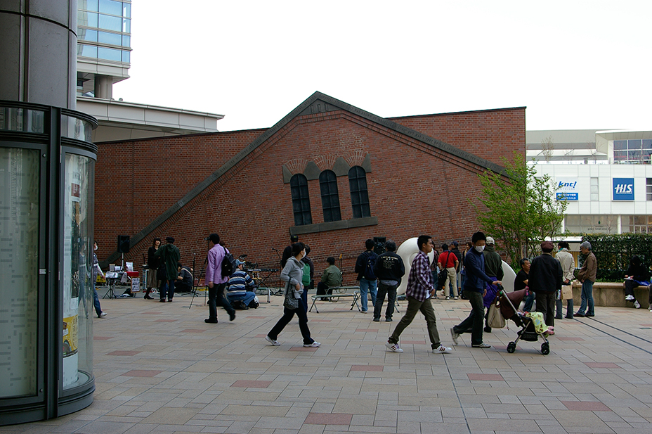
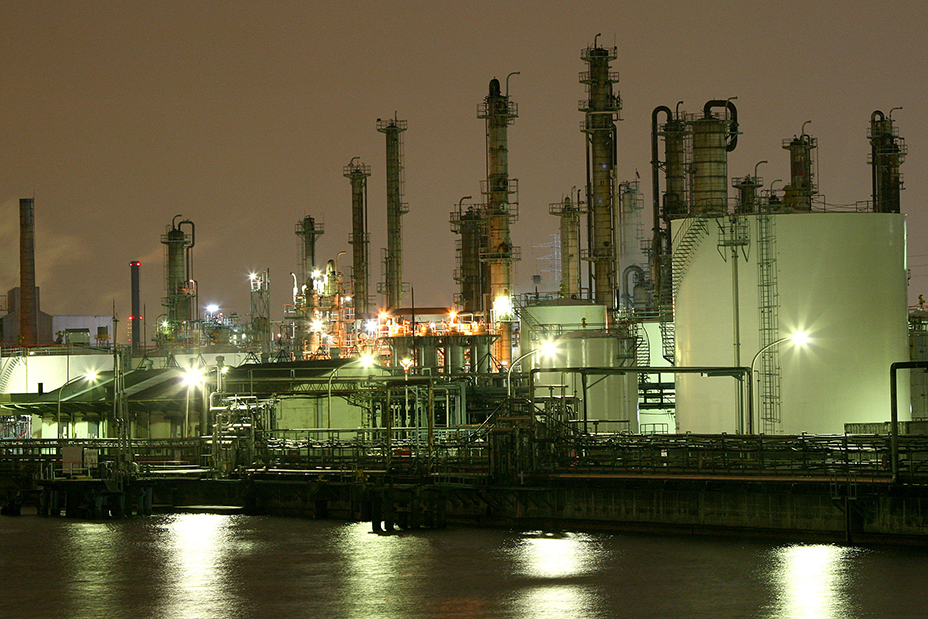

一九一四（大正三）年に建造された川崎市内最古の赤レンガ倉庫の一部がＪＲ川崎駅西口の広場に設置されることになった。
西口の象徴ともいえる存在だった倉庫は、ミューザ川崎シンフォニーホール（同市幸区大宮町）建設にあたり八年ほど前に
取り壊され、市が倉庫の北側壁部分のみを暫定保存していた。
二〇〇九年度には西口のシンボルの一つとして“復活”する。
倉庫は旧国鉄の川崎変電所の建物で、京浜線電化に伴い大井町、永楽町、原宿とともに建造された。
現在ミューザが建つ場所に大小二棟があったが、そのまま保存・移築するのは難しいとして、大棟の北側の壁一式を同じ区内
の新鶴見操車場跡地に暫定保存してきた。
設置される場所は駅からミューザに向かうデッキから見下ろすロータリー状の広場で、現在噴水などが設置されている島の
部分。幅十八メートル、高さ約十一メートルの壁を元の形状に敷き詰める形になる。
広場周辺は、市道川崎町田線を中心に渋滞解消やバス利用の利便性を上げるため、〇七～〇八年度に約五億三千万円
をかけ改良中。
工事が終了する〇九年度には赤レンガ壁がお目見えする。
担当のまちづくり局市街地整備推進課は「記念碑的な意味でも元あった場所に近いところが一番いいと考えた。
ミューザデッキの上から眺めてもらい、親しんでもらえれば」と話している。

川崎湾岸の工場夜景スポットは京浜工業地帯の一角にあり、日本有数の工場夜景エリアを代表するもっとも熱いエリアの１つです。
最近ではアーティストの方も曲のイメージを沸かせるために川崎工場夜景観賞に出向かれているほど！皆さんもぜひ出向いてみて頂きたいと思います。
川崎は１つのエリアの中に製油・製鉄といった２つの大きなジャンルが詰め込まれており、周辺の道路そして水上からは煌く工場プラント群を眺める事ができ、
工場夜景バスツアーや工場夜景クルーズといったツアーが続々と企画されている、ここ数年人気のスポットとなっています。
特に人気があるのが千鳥町貨物ヤード付近。週末ともなればツアーバスや夜景愛好家、カップルの方が多く訪れる場所となっており
三脚が林立する凄まじい光景が展開されております。この特集を参考にご自身でお気に入りの川崎工場夜景スポットを訪れてみてください！